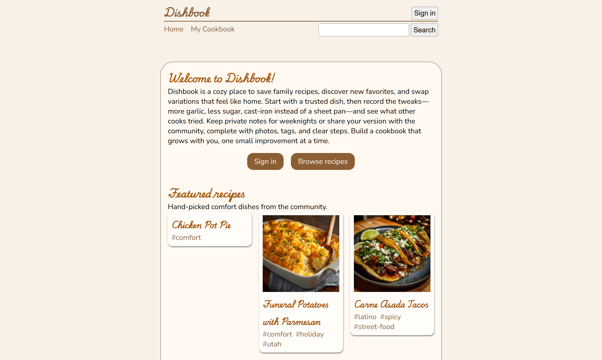
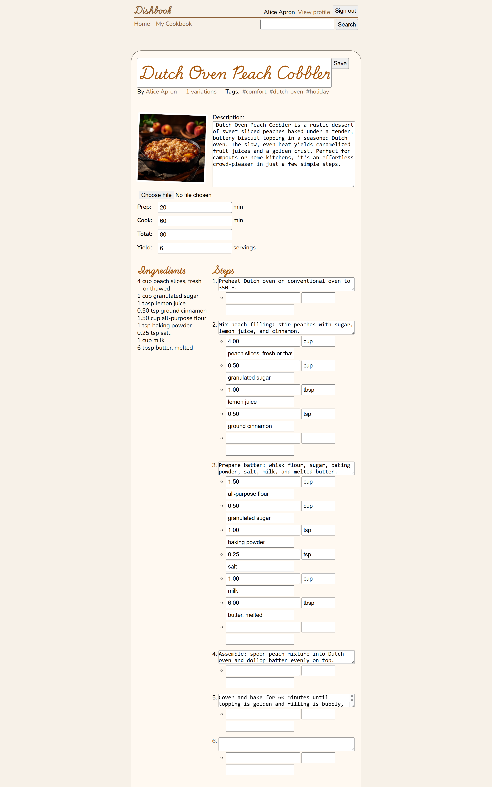

/RECIPE_MANAGER


/PROJECT OVERVIEW
Purpose
To demonstrate skill in full-stack development through a polished recipe management site that handles user authorization, form submissions, and dynamic search capabilities.
My Role
To build a functional full-stack website with a dynamic frontend and robust backend.
- Implement HTML & CSS given design specifications
- Architect complex model relationships by defining appropriate fields and properties in Django
- Run efficient queries and migrations as needed for requests & responses
- Configure & process forms with robust security & data validation
- Handle & prevent injection, CSRF, and open redirect vulnerabilities
- Progressively enhance website user experience with interactive Javascript features
- Deploy website with AWS EC2 and NGINX
/TECHNICAL IMPLEMENTATION
Architecture
The Recipe Manager follows the Model-View-Controller (MVC) architecture pattern using Django's MTV (Model-Template-View) framework. Django models define the database structure for recipes, ingredients, and user profiles. Views handle business logic and data processing, while templates render dynamic HTML. URL routing directs requests to appropriate views, ensuring clean separation of concerns and maintainable code.
Key Technologies
The tools, technologies, and languages were pre-determined by the professor. The main reasoning behind them was arbitrary as the main purpose was to develop our skills so that we could apply them to any technology stack in the future. Still, Django was chosen as the backend language of choice because of its simplicity and powerful full-stack capabilities and easy integration. SQLite was the database of choice because it is lightweight and does not require separate database setup, making cloud deployment simple. On the other hand, HTML, CSS, and Javascript are foundational languages to know for web development, so of course they were included.
Project Highlight
The database schema includes a User model for authentication, a Recipe model storing title, description, and creation metadata, an Ingredient model with foreign keys linking to recipes, and a RecipeStep model for sequential instructions. I implemented many-to-many relationships for recipe tags, allowing flexible categorization. Proper indexing on frequently queried fields like user_id and recipe_id optimized query performance. The design normalized data to eliminate redundancy while maintaining query efficiency.
Challenges & Solutions
One key challenge was handling complex form validation for recipe creation with multiple dynamic ingredient fields. I solved this using Django formsets to manage multiple ingredient entries in a single form submission. Another challenge involved preventing SQL injection and CSRF attacks; I leveraged Django's built-in protections including parameterized queries and CSRF tokens. Responsive design across devices required extensive CSS media queries and flexible layouts, which I addressed through mobile-first CSS design and thorough testing on various screen sizes.
Features
User Authentication
Utilized Django's built-in authentication system to authorize users and perform group-based and identity-based access control checks.
Recipe Management
Editing functionality allows authenticated users to read and update recipes. Forms include blank fields for additional ingredients and steps, as well as real-time calculation updates as you edit. Form validation ensures data integrity and human-readable error messages.
Search & Filter
Implemented a search feature allowing users to find recipes by title, tag, and variation. Backend efficiently retrieves matching results using fetch endpoints that filter recipes and return results as a JSON response.
Responsive Design
The site implements CSS Flexbox and media queries to allow the site to adapt to various user viewports. Through a structured process that included wire framing elements and identifying containers, complex nested layouts were implemented, following design specifications closely.
Successfully delivered a fully functional, deployed web application that demonstrates proficiency in full-stack development.
- Mastered Django ORM for efficient database queries and model relationships
- Implemented secure authentication and authorization patterns preventing common web vulnerabilities
- Gained hands-on experience with cloud deployment using AWS EC2 and NGINX configuration
Given more time, some additional features & improvements I could add to enhance the application are:
- Account registration for full user support
- Recipe ratings, user comments, and social sharing to allow community engagement
- Image upload optimization and lazy loading for faster page performance